Imágenes recolectadas mapeadas explícitamente a los productos de la calculadora (PANELS_TECHO en constants.js).
Para verificar fidelidad con productos reales (Isoroof 3G/Plus/Foil/Colonial + Isodec EPS/PIR).
| Archivo Local | Producto(s) en Calculadora | Qué muestra (para verificar) |
|---|---|---|
| isoroof-plus.png | ISOROOF_PLUS ("ISOROOF PLUS 3G") | 3 grecas superiores + interior imitación madera. Colores ext. blanco/gris/rojo. 30/50/80mm, au=1.0m |
| isoroof-3g.png | ISOROOF_3G ("ISOROOF 3G") | Perfil trapezoidal 3G estándar, interior blanco. 30-100mm, au=1.0m |
| isoroof-foil.png | ISOROOF_FOIL ("ISOROOF FOIL 3G") | Mismo perfil 3G + interior foil flexible blanco. 30-80mm |
| isoroof-colonial.jpg | ISOROOF_COLONIAL ("Isoroof Colonial") | Estética teja colonial exterior + interior blanco. au=1.0m |
| isodec-pir.png | ISODEC_PIR ("ISODEC PIR") | Engrafado lateral, au=1.12m, 50/80/120mm, PIR. (También referencia para ISODEC_EPS) |
| bmcuruguay-isoroof-3g-*.jpg/png | ISOROOF_3G (y familia Isoroof) | Fotos comerciales reales del distribuidor BMC Uruguay. "Trapezoidal 3G", chapa 0.55/0.45mm |
| chacras-del-sur-cubierta-roja.jpg + otras obra | ISOROOF_3G / ISOROOF_PLUS (techos reales instalados) | Ejemplos de cubiertas instaladas en Uruguay (plegados/grecas visibles en contexto real) |
| bromyros-isodec-ficha.pdf + isoroof-plus-bromyros-ficha.pdf | Todos los Isoroof + Isodec | Fichas técnicas oficiales Bromyros con "trapezoidal (3 grecas)", especificaciones, forros |
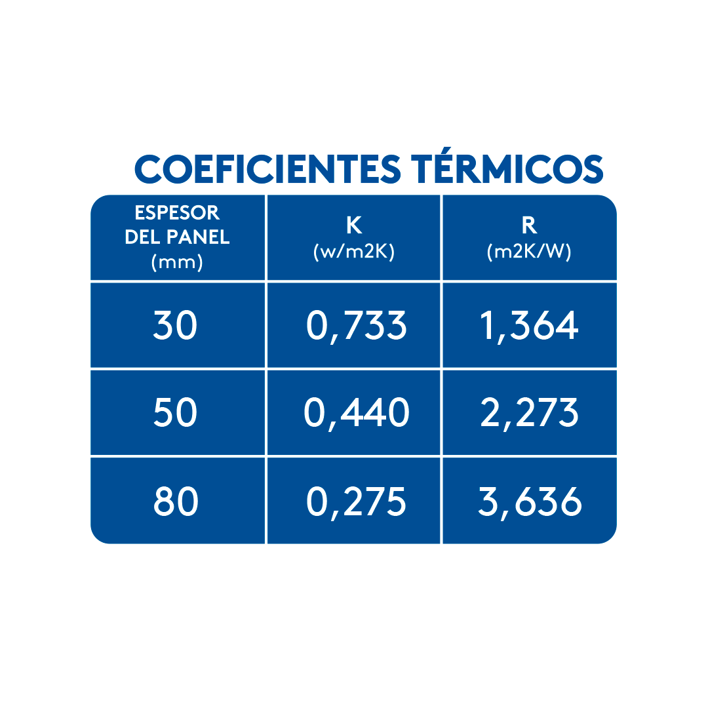
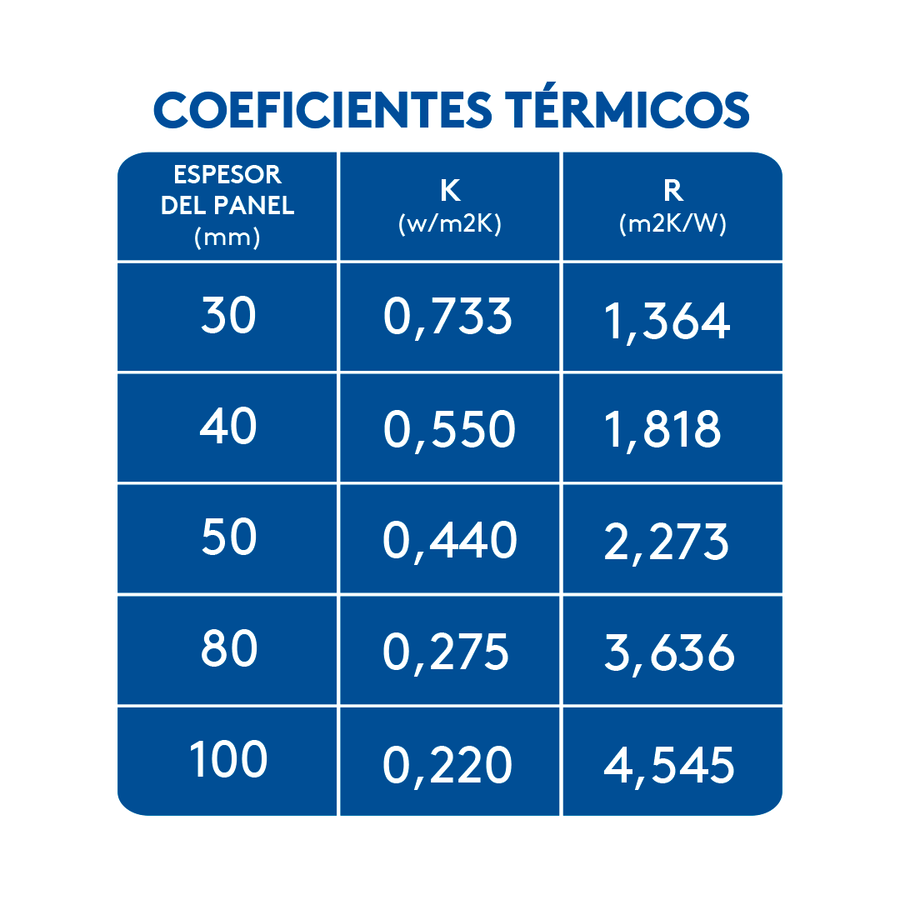
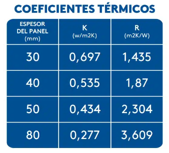
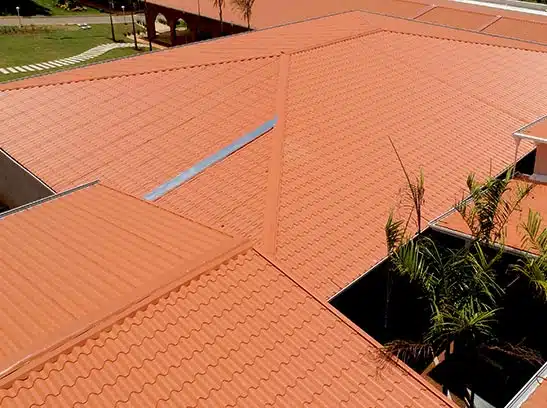
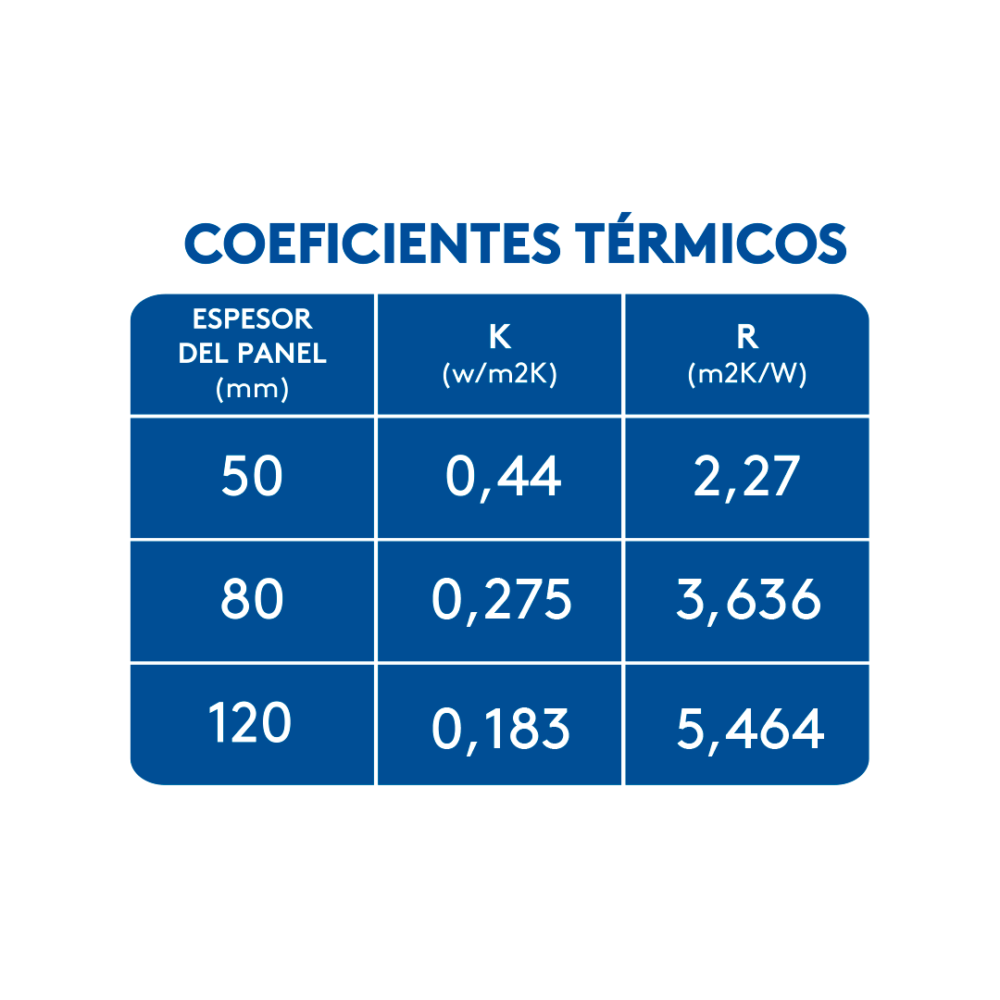
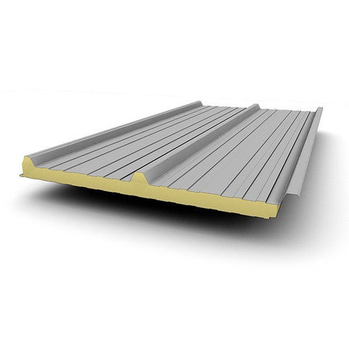
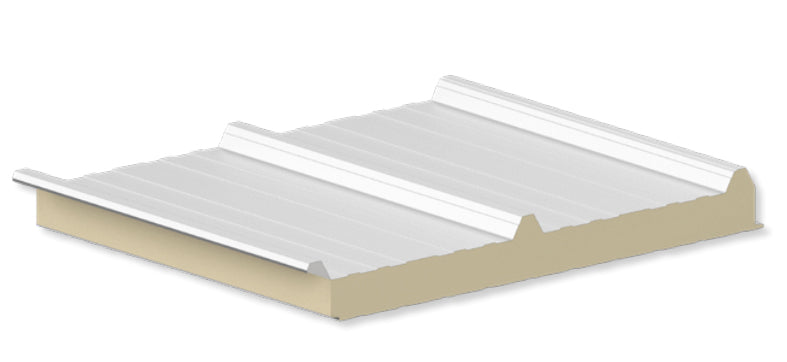
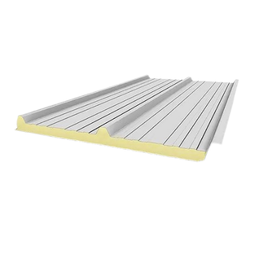
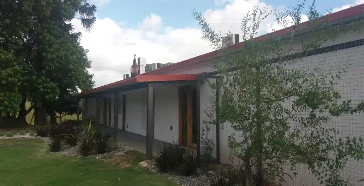
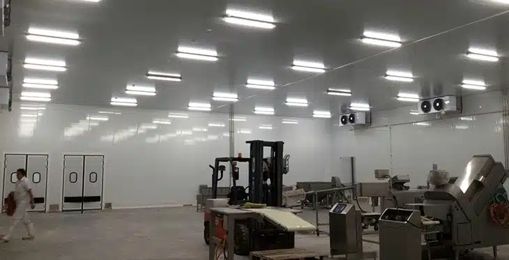
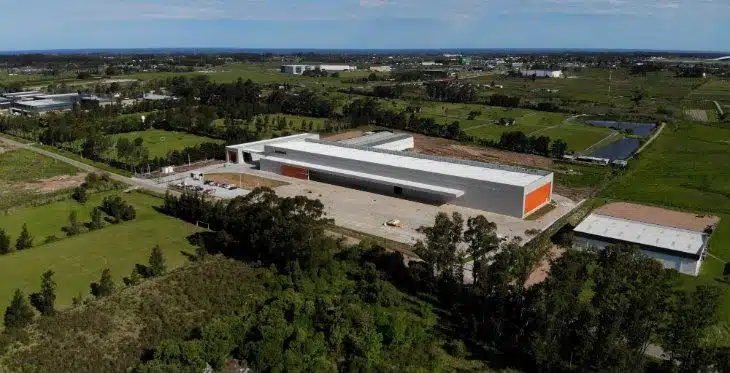
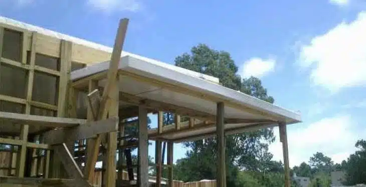